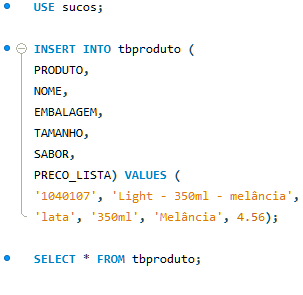
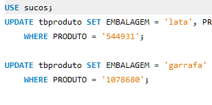
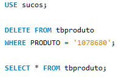

MySQL
Linguagem SQL - História
Desenvolvido no inicio dos anos 70 nos laratoríos da IMB. Eram chamdos de banco de daods sequenciais No final dos anos 80 um orgão americano chamado ANSI estiupulou padrões para consltar os bancos de dados relacionais. A linguagem veio com o objetivo de padronizar a forma como é consultado os bancos de dados relacionais.
Existem bancos de dados que não seqem os padrões SQL, são os bancos de dados NoSQL. A linguagem SQL não é uma linguagem estruturada.
- Existem alguns grupos de comandos no SQL:
MySQL - História
Três desenvolvedores precisavam ter uma interface SQL compativel aos bancos de dados de mercado, para isso criaram o MySQL Em 2008 a empresa que gerenciava o codigo da SQL foi comprada pela empresa Sun Microsystems (dona do projeto JAVA), em 2009 a Oracle compra a sun e vira dona do MySQL
Introdução ao MySQL
Dentro do banco de dados temos diversas entidades. Uma delas é a tabela, com colunas e linhas.
Tabelas:
Cada tabela possui campos(campos) e linhas, para os campos, devemos determinar qual é o tipo de valor colocado
ali dentro, sendo ele numérico, lógico ou strings, podemos ter um numero infinito de linhas em uma tabela.
A tabela pode ter algo chamado de chave primaria.
Um exenplo de chave primaria é uma tabela aonde temos CPFs que não podem ser repetidos, se dissermos que o CPF é chave primaria não podemos ter na mesma tabela duas linhas com CPfs iguais.
A chave estrangeira é quando fazemos relações entre tabelas, por exemplo: temos um cliente em uma tabela, com um numero de CPF, na outra tabela devera ter esse cliente cadastrado nessa outra tabela.
As tabelas também podem ter um índice para um certo campo.
Esquemas
Em MySQL, um "esquema" é um container lógico que ajuda a organizar e agrupar objetos de banco de dados, como tabelas, views, procedimentos armazenados, funções e outros elementos relacionados. Um esquema é uma abstração de alto nível que fornece uma estrutura para manter a coerência e a organiz.
View
No MySQL, uma "view" (visão) é uma representação virtual de uma tabela que é criada a partir de uma ou mais tabelas existentes. Uma view permite aos usuários consultar e manipular os dados de forma mais conveniente, como se estivessem interagindo com uma tabela real.
Procedures
Uma procedure é composta por um conjunto de instruções SQL. Essas instruções podem incluir seleções de dados, inserções, atualizações, exclusões e outras operações SQL.
Trigger
Em MySQL, um "trigger" (gatilho) é um tipo especial de procedimento armazenado que é automaticamente executado pelo sistema de gerenciamento de banco de dados (DBMS) em resposta um evento especifico, como uma inserção, atualização ou exclusão de registros. Os triggers são usados para automatizar tarefas e aplicar regras de negócios no nível do banco de dados, sem a necessidade de intervenção manual.
Criando banco de dados
Para criar um banco de dados usar o comando:
CREATE {DATABASE | SCHEMA} [IF NOT EXISTS] db_name
[create_option] ...
create_option: [DEFAULT] {
// O tipo de caracteres (UTF-8)
CHARACTER SET [=] charset_name
//Especifica o padrão
| COLLATE [=] collation_name
//Especifica se vai ser criptografado
| ENCRYPTION [=] {'Y' | 'N'}
}
Deletar banco de dados
Para deletar banco de dados usamos o comando:
DROP {DATABASE | SCHEMA} [IF EXISTS] db_name
Criando Tabela:
Cada campo da tabela precisa ter um tipo de valor,sendo eles:
Numéricos:
- TINYINT
- SMALLINT
- MEDIUMINT
- INT
- BIGINT
- FLOAT
- DECIMAL
- BIT
Cada valor pode ter um incremento, sendo eles:
SIGNED ou UNSIGNED: Vai possuir ou não sinal no número.
ZEROFILL: Preenche com zeros os Espaços.
AUTO_INCREMENT: Sequencia auto incrementada
Erros de OUT OF RANGE vão acontecer quando os valores estourarem os limites.
Data e Hora:
- DATE - datas
- DATETIME - data e hora
- TIMESTAMP - fuso horários
- TIME - horário
- YEAR - Ano
Srings
- CHAR - cadeia de caractéres com valor fixo (de 0 a 255).
- VARCHAR - cadeia de caractéres com valor variado (de 0 a 255).
- BINARY - cadeia de caractéres com valor fixo (de 0 a 255). Expressos em binário.
- VARBINARY - cadeia de caractéres com valor variado de (de 0 a 255). Expressos em binário.
- BLOB - binário longo.
- TEXT - texto longo.
- ENUM - permite armazenar uma lista pré definida de valores.
- SET e COLLATE - que tipo de conjunto de caractéres serão suportados (ex: UTF-8)
Spacial:
- GEOMETRY
- POINT
- LINESTRING
- POLYGON
Na imagem a seguir temos a criação de uma tabela de um banco de dados para una loja:

Inserindo registros na tabela
Para inserir dados dentro de uma tabela usar o comando INSERT
Desse jeito os dados serão inseridos na tabela. Não esqueça que os dados devem estar na ordem conforme as colunas colocadas no insert into!
Alterando registros
Para alterar registros da sua tabela, usar o comando UPDADE tbnome SET mudança.
O comando WHERE cria um filtro, somente esse produto será alterado.
Excluindo Registros
Para deletar registros de dentro de uma tabela é preciso usa o comando WHERE novamente para filtrar e o comando DELETE FROM
